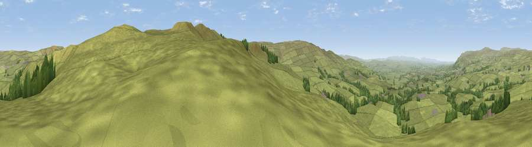

Viewpoint near Brough Sowerby
#10682 in England · top 28% of its area beats it · near Brough SowerbyThe view, rendered

A 360° render of this exact spot computed from the terrain model, tree cover and land cover — summer colours, afternoon light, calibrated against photographs of famous viewpoints. Real trees, hedges and buildings will differ in detail.
The panorama
Grey silhouette: terrain skyline in each direction (720 bearings, Earth curvature and refraction included). Dashed green: skyline with trees (+15 m) and buildings (+8 m) as obstacles. Blue strip: how far the ground is visible on each bearing.
Where the view opens
Wedge length = distance to the farthest visible ground on that bearing (vegetation-aware). Rings at 10, 25 and 50 km.
What fills the view
93% grassland · 6% woodland
Angular shares of the visible panorama (visual magnitude), not map area. Landscape diversity 0.12 (0–1 Shannon).
Key numbers
More beautiful places nearby
The staircase of upgrades: each row has a higher view potential than everything closer. Driving times are estimates from straight-line distance, calibrated against real road routing — check an actual route before setting out.
| Place | Direction | Drive | Score |
|---|---|---|---|
| Viewpoint near Brough Sowerby | SSE · 0 km | ~2 min | 63.4 |
| Viewpoint c10219_7705 | SE · 1 km | ~3 min | 68.9 |
| Viewpoint c10212_7709 | SE · 1 km | ~4 min | 73.4 |
| Viewpoint near Nateby | SSW · 9 km | ~18 min | 75.0 |
| Viewpoint near Nateby | SSW · 11 km | ~21 min | 75.7 |
| Viewpoint c10024_7603 | SSW · 11 km | ~22 min | 76.9 |
| Calders | SW · 23 km | ~39 min | 79.0 |
| Calf Top | SW · 32 km | ~49 min | 79.8 |
54.50061, -2.23969 · source: screening · position refined by local search. Computed location — check access rights before visiting.